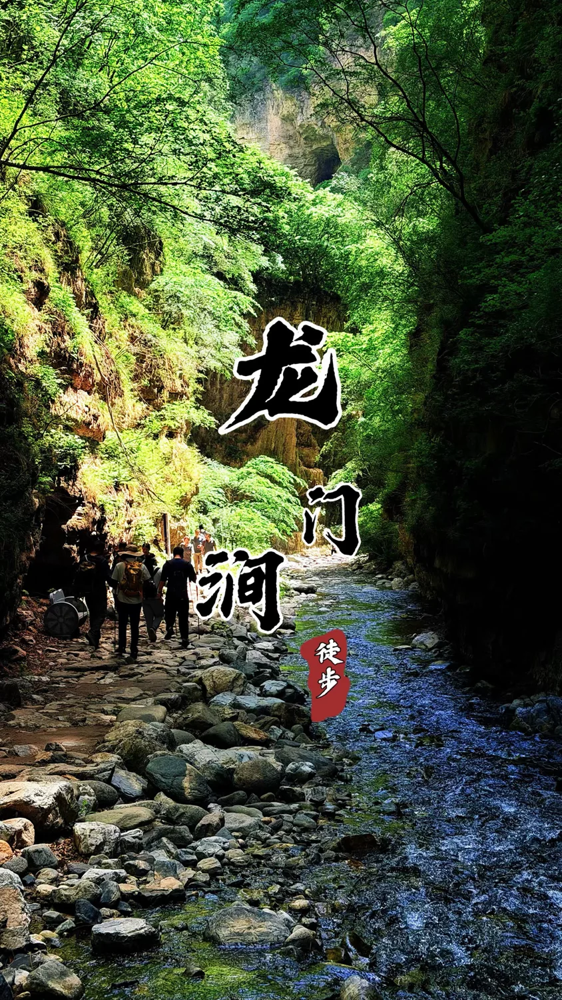
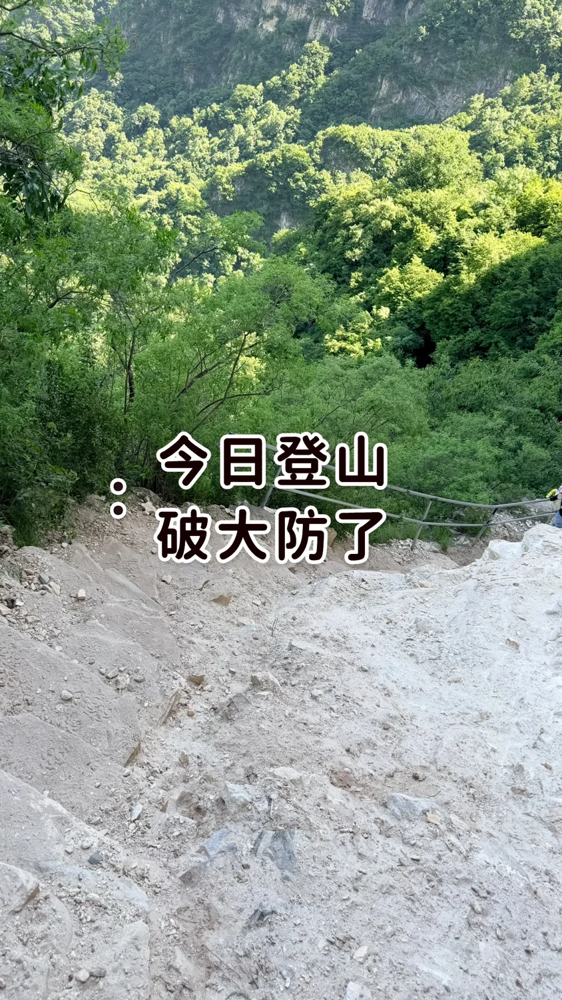
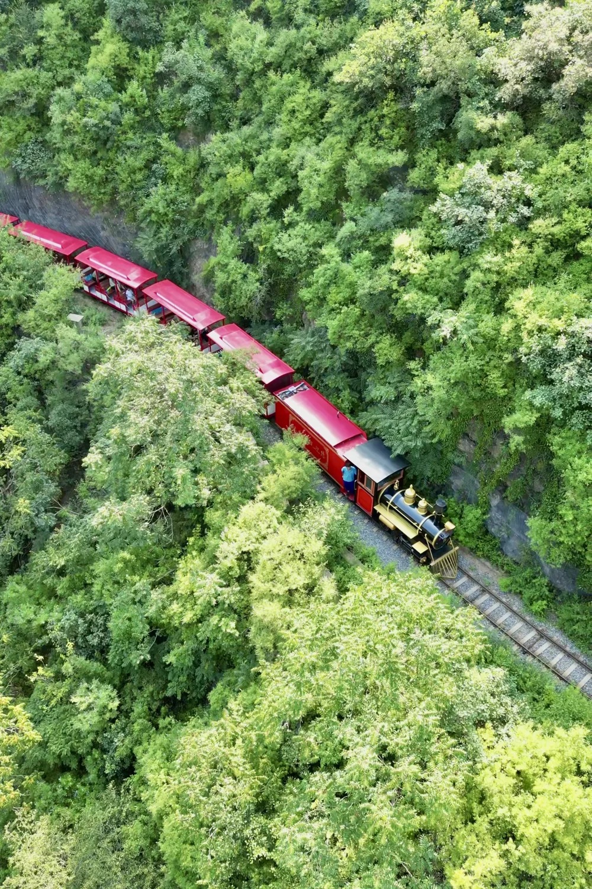
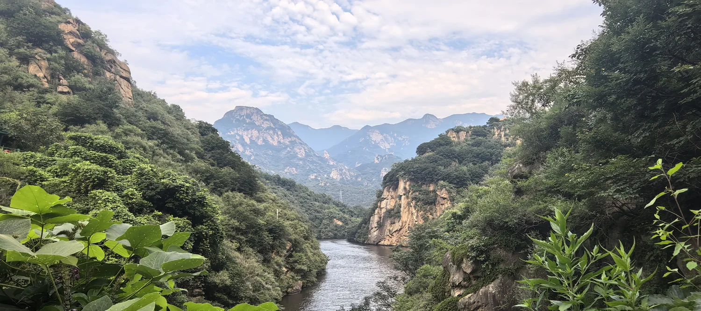
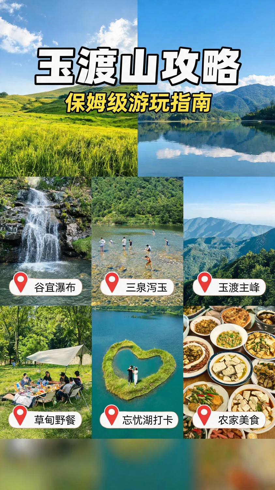
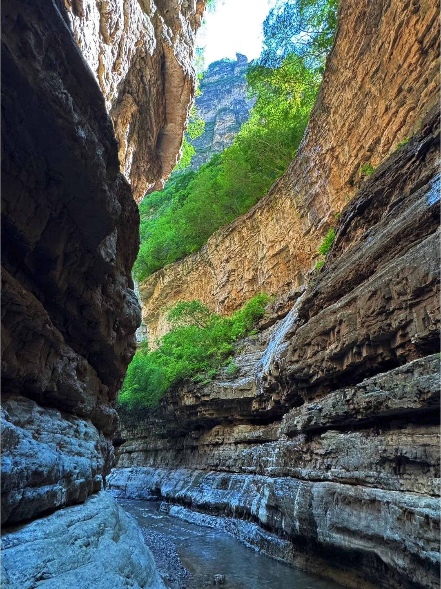
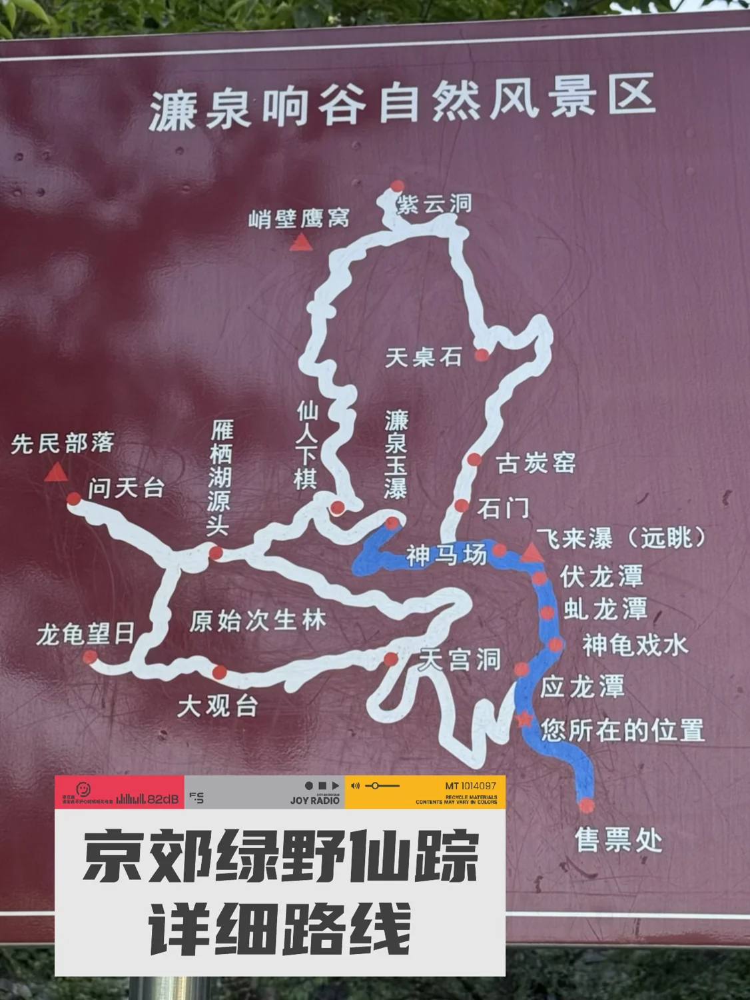
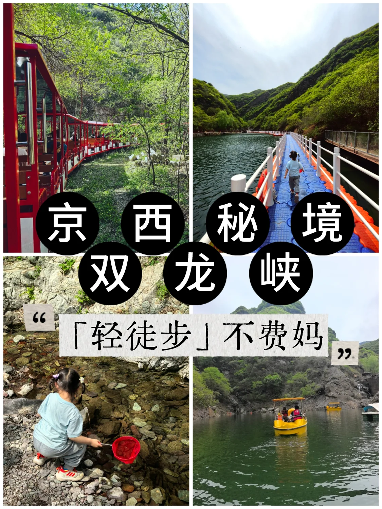
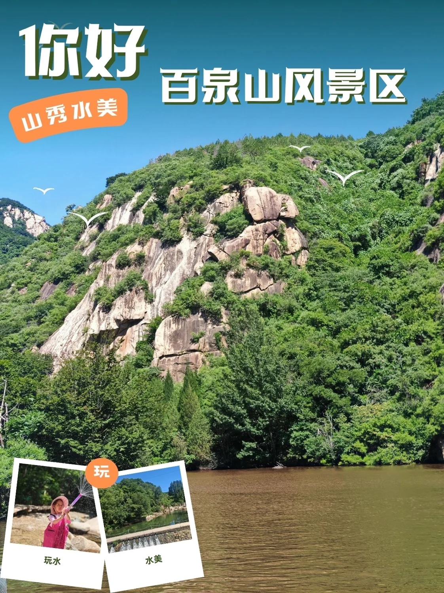
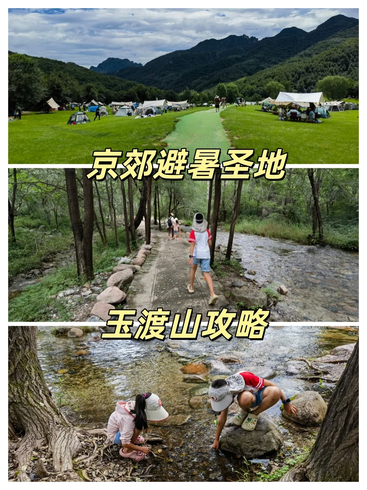

五道口出发 · 长线 Top 5 保留，同时增补 2026-09-05「单程尽量 ≤1.5h」近场踩点池。小红书负责找氛围，开放/门票用携程与公开索引交叉核验，Open-Meteo 看目标周末降水，OSRM 核路程；没有恢复开放证据的野沟直接降级。
🏔 高海拔真凉（空气温度低）：900m+ 的玉渡山七月白天实测 25.4°C，比城区低 7°C，是气温本身低。
🧊 峡谷亲水体感凉（微气候）：谷底空气 grid 温度约 28°C，但深谷 + 溪水 + 百米绝壁遮荫，体感能到 20°C——小红书那些「20℃峡谷」是体感，实测过市区 40°C 进龙门涧降七八度。溯溪玩水靠的就是这个。
下面每条线都标了它靠哪种机制，以及 2025 年 7 月定点实测的白天均温 / 降水（降水少 = 溯溪山洪风险低）。










↑ 封面均为小红书真实搜索结果实拍图，已下载到本仓库 assets/covers/ 本地化（不引用远程签名 URI，防止过期 403）。
| 你想要 | 选 |
|---|---|
| 溯溪玩水 + 凉爽 + 不累（综合最优） | 🥇 龙门涧 |
| 强度更低 + 玩水徒步拍照都要 | 濂泉响谷 |
| 玩法新奇（小火车）+ 最安全溯溪 | 双龙峡 |
| 扎实溪谷环线 + 离得近 | 百泉山 |
| 真凉 / 开阔 / 能露营（非峡谷） | 玉渡山 |
毛豆爱户外 + 动手 + 真实采集，体力强；家里出行常带一位老人（怕高反 / 忌太多台阶）。这 5 条按「峡谷亲水 + 低台阶 + 自驾环线」优先，都不是硬核穿越。
天气前提：五道口周六约 21–33°C、降水 0mm / 降水概率 0%；西北山谷代表点约 14–25°C、降水 0mm。适合踩水，但预报仍须周五复核；任何暴雨、雷雨或山洪预警日都不进峡谷。
| 踩点级别 | 地点 / 五道口路程 | 这次重点看什么 | 当前证据 | 临门一脚 |
|---|---|---|---|---|
| 主踩点 L2+ 可踩 |
门头沟·神泉峡 OSRM 裸时约 53km / 48min 周末按 1–1.3h |
管理型峡谷是否仍有足够的踩水段；栈道/溪石对 10 岁孩子是否有趣；停车、厕所、补给和午餐是否能形成半日线。 | 携程景点页 + 公开索引均指向妙峰山镇炭厂村；成人票约 ¥36；08:00–17:00，16:00 停止入场；2026 年公开内容仍有夏季游览记录。 | 出发前致电 010-61884638 问当日水量和是否允许下水；定位必须选「神泉峡风景区」，别误入野沟。 |
| 近场备踩 L2 待实踩 |
昌平·虎峪沟 OSRM 裸时约 47km / 45min 周末按 50–70min |
验证羊尾巴湖—沟谷段实际水量，判断它是「近场亲水散步」还是能达到溯溪体验；轻量走法控制 4–6km，不套用 17.9km 居庸关穿越线。 | 公开景区信息显示南口镇、景区停车场、09:00–17:00、成人票历史价约 ¥15；2026 年 8 月仍有游览攻略更新，但水量缺乏可靠实时证据。 | 当日电话核开放与水量；若沟里水少，把它降级为「短车程林荫恢复线」，不要硬写成溯溪。 |
| 暂缓 硬否决 |
昌平·白羊沟 OSRM 近似约 71km / 67min |
原本野趣强，但当前不把「有人从附近走过」等同于景区/沟谷合法开放。 | 公开索引同时出现「依旧封山封沟、六道弯严禁进入」和 Trip.com「暂停营业 / 营业时间待定」；虽有 2026 年视频称外围道路恢复约 80%，仍没有可靠的正式恢复开放公告。 | 没有 dated 恢复开放公告前不推荐、不翻越、不绕卡口。后续只跟踪官方复开消息。 |
本周拍板：神泉峡先踩，虎峪作为近场水量备选，白羊沟从候选中撤下。神堂峪虽更成熟，但属于已去过/近期重复类型，本周不作为默认新线路。真实 browser session 本轮连接请求未获授权，因此小红书/点评登录态深读没有冒充完成；页面只采用已保存的历史 session 证据与本轮公开索引证据。
| # | 路线 | 凉爽机制 · 7月实测 | 路线 · 强度 | 自驾（五道口）· 配套 | 避雷 / 临出发复核 |
|---|---|---|---|---|---|
| 1 | 门头沟·龙门涧 京西张家界 / 20℃峡谷 |
🧊 峡谷微气候，体感~20°C（市区40°C降7-8°C） 白天均28.2°C · 降水153mm（门头沟最干档） |
精华线 入口→大将军石→猫眼石→一线天→黑龙潭折返 往返8km / 3h / 全程无陡坡平缓石子路，浅滩脚踝深 |
104km / 周末~1.8h 门票40元(6岁下免/老人学生半价)、停车10元 谷内有农家菜 + 24h贩卖机 |
地面青苔巨滑必穿溯溪鞋；水凉小童穿雨靴别光脚；带薄外套 + 玩水换洗；驱蚊 |
| 2 | 怀柔·濂泉响谷 一半溪水一半山林 |
🧊 峡谷 + 全程树荫，后半段完全不晒 白天均28.2°C · 降水161mm |
前半溯溪踩水+连续瀑布，后半树荫岩洞+山顶观景台 往返3-4h / 无强爬升，3km小环线亲子/宠物友好 |
107km / 周末~1.6h 怀柔美食配套强（虹鳟鱼 / 农家院） |
「打卡照骗预警」帖存在→旺季别期待无人；防滑鞋 + 驱蚊；彩色钙化岩壁在下山段 |
| 3 | 门头沟·双龙峡 森林小火车 + 百潭瀑布 |
🏔🧊 谷底900m + 老龙窝1646m小流域气候 白天均27.6°C · 降水142mm（全场最干最安全） |
网红森林小火车进沟，沟内栈道轻走3-5km 十里溪流百潭瀑布，小火车代步→总步行轻 |
90km / 周末~2-2.3h（山路慢，唯一缺点） 斋堂 / 双龙峡村农家院密集 |
小火车排队 / 季节运营当天查；沟内栈道溪边湿滑；盛夏看绿荫溪瀑（红杏是春末） |
| 4 | 怀柔·百泉山 低幼溯溪撒野 |
🧊 峡谷溪流山泉 白天均28.6°C · 降水262mm（偏多） |
六只脚实测 6.2km / +308m / 环线（自驾免接驳） 峡谷溪流 + 山泉，农家院恢复餐 |
75km / 周末~1.75h（怀柔线里较近） 北台子 / 百泉山农家院集群 |
降水偏多 + 雨后石头滑；+308m 要基础徒步鞋不是纯平路；停车 / 农家院时段先查 |
| 5 | 延庆·玉渡山 唯一「真凉」高山选项 |
🏔 海拔900m，白天实测25.4°C，比城区低7°C（空气真凉） 降水166mm |
忘忧湖环湖 + 高山草甸 + 溪谷步道 4-6km 低强度 可开车进景区，可玩水放风筝，台阶少 |
90km / 周末~1.6h 携程4.6/999+ 成熟；山脚民宿咖啡；可露营 |
周末停车 / 入园排队；玩水刺激度不如前四；保持景区步道，深处野线可能封闭 |
证据分层：龙门涧 / 濂泉响谷 / 百泉山 = L3（小红书 session 深读正文 + 六只脚/门票实证）；双龙峡 / 玉渡山 = L2（存在 + 气候实证，沟内具体里程待官方游览图）。所有温度、降水、车程均为定点实测数字，非「天气不错」的含糊话。
ci.xiaohongshu.com 端点下载并转真 WebP 落盘在本仓库，页面用相对路径引用，不依赖任何远程签名 URI。